Um Faktorstrukturen, wie im Falle der Gruppen und Ringe, für universelle Algebren konstruieren zu können, wird der Begriff der Kongruenzrelation benötigt. Eine Kongruenzrelation ist eine mit der Struktur verträgliche Äquivalenzrelation: Es sei 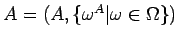 eine  -Algebra und R eine Äquivalenzrelation in A. R heißt Kongruenzrelation in A, falls für alle 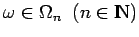 und alle 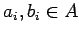 mit 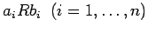 gilt:
-Algebra und R eine Äquivalenzrelation in A. R heißt Kongruenzrelation in A, falls für alle 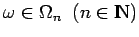 und alle 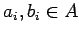 mit 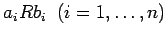 gilt:
| 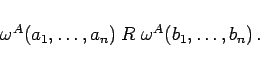 | (5.300) |
Die Menge der Äquivalenzklassen (Faktormenge) bezüglich einer Kongruenzrelation bildet bezüglich repräsentantenweisem Rechnen wieder eine  -Algebra: Es sei eine
-Algebra: Es sei eine  -Algebra und R eine Kongruenzrelation in Die Faktormenge A /R (s. Äquivalenz- und Ordnungsrelationen) wird bezüglich folgender Operationen 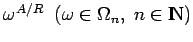 mit
-Algebra und R eine Kongruenzrelation in Die Faktormenge A /R (s. Äquivalenz- und Ordnungsrelationen) wird bezüglich folgender Operationen 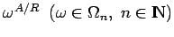 mit
| 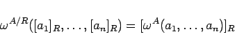 | (5.301) |
zu einer  -Algebra A/R, der Faktoralgebra von A nach 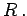
-Algebra A/R, der Faktoralgebra von A nach 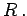
Die Kongruenzrelationen von Gruppen bzw. Ringen lassen sich durch spezielle Teilstrukturen - Normalteiler bzw. Ideale - beschreiben. Im allgemeinen, z.B. bei Halbgruppen, ist eine solche Beschreibung der Kongruenzrelationen nicht möglich.